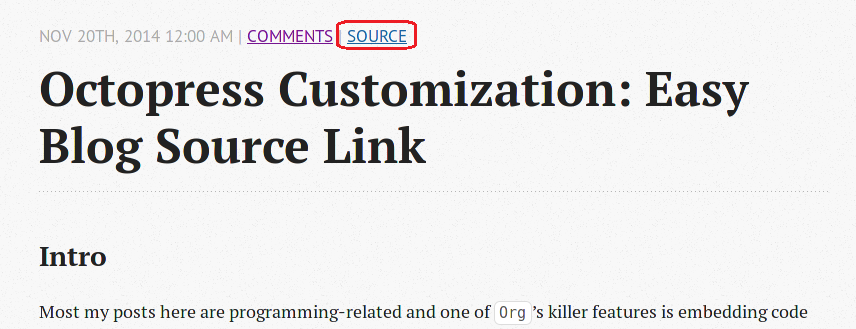

Most my posts here are programming-related and one of Org's killer features is
embedding code (used in literate programming and etc.), I thought why not give
the reader an easier way to access my post source. Chances are that they might
be using Emacs and Org, then they can try the code directly without
copying/pasting or the hassle to wade through my source repo ;).
It turns out to be quite easy to do this, as shown in the red rectangle below:

Liquid document is more useful.
Octopress-specific docs.
Here is the whole commit:
{% raw %}
1: diff --git a/source/_includes/article.html b/source/_includes/article.html 2: index 8427997..c38fd90 100644 3: --- a/source/_includes/article.html 4: +++ b/source/_includes/article.html 5: @@ -12,6 +12,14 @@ 6: | <a href="{% if index %}{{ root_url }}{{ post.url }}{% endif %}#disqus_thread" 7: data-disqus-identifier="{% if post.meta.disqus_id %}{{ post.meta.disqus_id }}{% else %}{{ site.url }}{{ post.url }}{% endif %}">Comments</a> 8: {% endif %} 9: + | 10: + {% if index %} 11: + {% capture abs_page_url %}{{ root_url }}{{ post.url }}{% endcapture %} 12: + <a href="{{ abs_page_url | split:'.html' | first | append:'.org' }}">SOURCE</a> 13: + {% else %} 14: + <a href="{{ page.url | split:'.html' | first | append:'.org' }}">SOURCE</a> 15: + {% endif %} 16: + 17: </p> 18: {% endunless %} 19: </header>
Explanations:
.html with .org. I have my
source synced to the _deploy/blog so here changing the extension is enough.
I didn't find a better way to do this simple replacement :(.
While I still like this idea of sharing blog source more easily, its usability
might not always be so good as I thought. As in this post, I've used some Org
link reference to make explanation clearer, which is nice for a post but at the
same time make it inconvenient to use the code directly.
{% endraw %}